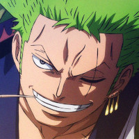

18/06/2024 🤖
Listas
As listas são criadas pela tag LI
Lista Ordenada
Lista Ordenada é gerada com a tag OL, sendo usada para listas onde a ordem faz diferença. Tambem da pra mudar o tipo de numeração marcada na lista usando a tag STYLE
EX:Membros a entrar no bando dos chapeus de palha
- Luffy
- Zoro
- Nami
- Usopp
- Sanji
- Chopper
- Robin
- Franky
- Brook
- Jimbei
Listas não ordenadas
Geradas pela tag UL. Sendo usadas para listas oned a ordem não faz diferença, tipo uma lista de mercado.
EX:Lista do mercado
- Pão
- Arroz
- Feijão
- Biscoito
- Òleo
- Papel higienico
- Tomate
Juntando Listas
Da pra misturar os tipos de listas quando quiser,basta abrir outro OL ou UL logo abaixo do LI.
EX: Jogos e Series favoritos
Jogos
- Hollow Knight
- Batman Arkhan
- Arkhan Asylun
- Arkhan City
- Arkhan Origins
- Arkhan Night
- Horizon Zero Dawn e Forbidden West
- Sekiro
- Ghost of Tsushima
- Ratchet and Clanck
Series
- The Last of Us
- The Witcher
- The Walking Dead
- Rick and Morty
Lista de definições
Usa-se as tags DT e DD
EX:Nomes de Naruto
Jynchuriki
Pessoa portadora de uma besta de caudas
Akatsuki
Organização criminosa que busca obter todas as bestas de caudas
Hokage
Protetor da vila
Pra finalizar, vai ai a foto do Zoro.
